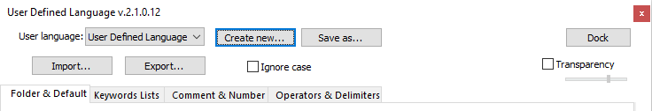
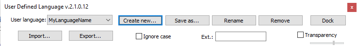

What are User Defined Languages
Notepad++ comes prepackaged with many Language lexers, which apply syntax highlighting to source code or textual data. However, not every possible language or formatting style is available. Enter the User Defined Languages (or “UDL” for short): the UDL interface allows the user to define rules for formatting normal text, keywords, comments, numbers; to define delimiters (like quotes around strings or parentheses around lists) which will cause text between those delimiters to be formatted; and to define symbols or keywords that can be used to allow folding (on-demand hiding and unhiding of blocks of code or text).
UDL Dialog Box or Window
The Languages menu on the menu-bar includes the list of built-in languages, and below those are a separator followed by Define Your Language… and a list of any UDL that have been already defined.
Using Languages > Define Your Language… will bring up a dialog box (which can be docked as a pane in the Notepad++ Window, or can be a floating dialog box).
The main pulldowns and buttons are available, whichever configuration tab is active:

- User Language pulldown lists all the existing UDL will allow you to select the UDL you would like to edit or examine. There is a special entry for the default UDL, called User Defined Language here (though it shows up in the Notepad++ Languages menu as User-Defined), which can be used as a template for other UDL.
- Create new… will copy the default User Defined Language stylings and rules to a new name.
- Save as… will copy the currently-selected UDL, with all its stylings and rules, to a new name.
- Please note: Naming your UDL is required, either using Create new… or Save as…. Any changes made to the default User Language:
User Defined Languageentry will be lost when you exit Notepad++.
- Please note: Naming your UDL is required, either using Create new… or Save as…. Any changes made to the default User Language:
- Import… will import a UDL XML file into your current instance (see below).
- Export… will save a UDL XML file to a location of your choosing; you can then share this with others, so that they can import your UDL for their own use.
- Dock or Undock will toggle whether the UDL dialog is a standalone dialog, or docked in the Notepad++ window.
- ☐ Ignore Case will make the various keywords ignore case while matching.
- ☐ Transparency (when not docked) will make the dialog box semi-transparent; the slider bar changes from virtually invisible (all the way to the left) to mostly opaque (all the way to the right); if you want it completely opaque (no transparency), uncheck the box.
When a UDL other than the default User Defined Language is selected in the pulldown, the following will also be available:

- Rename will rename the currently-selected UDL.
- Remove will delete the currently-selected UDL.
- Ext.: ____ will accept a list of zero or more extensions (without the period). Files that match these extensions will be interpreted as belonging to the currently-selected UDL, and will be styled appropriately. These extensions override the default extensions for pre-defined Languages, so if your UDL’s extension conflicts with another language’s extension, the UDL will take priority. For example Ext.:
md mkdnwill associatefile.mkdnorsomething.mdwith your selected UDL.
UDL Configuration Tabs
The “Details” links throughout this section will give additional information on how each of the fields in the UDL dialog will affect the syntax highlighting. You should start with the Details: Parsing to find out more on the order that UDL parsing occurs
-
The Folder & Default tab allows setting the default style, setting up keywords (or characters) that will allow code folding, and setting up styles for those keywords. The Open, Middle, and Close boxes under each folding-type define the triggers for the start, middle, and end of folding. For example, with
if,else, andendif, it will define fold regions so that you can fold fromiftoelse, fromelsetoendif, and (assuming there is noelseclause) fromiftoendif. Folding in comment allows comments to include folding; Folding in code 1 style allows the triggers to be touching something else (so with a trigger of{, it will matchif{orif {), whereas Folding in code 2 style requires there be whitespace around the trigger (soif{would not match an Open-trigger of{). -
The Keywords List tab allows defining eight (8) different groups of keywords, so you can style different groups of words differently (like built-in functions vs. flow control keywords). Separate each keyword by a space (and that means that spaces are not allowed in keywords unless you put quotes around the phrase). If ☐ Prefix Mode is checked for a given group, that means that it will match anything that starts with your string (so a keyword of
forwould matchfor,forth, andformatif that option is checked).As a point of interest, you shouldn’t have a given keyword in more than one keyword-group or folder-group. If you want
if/else/endifto cause block-folding, do not also put them in one of your keyword-groups. -
The Comment & Number tab allows setting styles for comments and for numbers.
- Line Comment Position allows you to decide whether “line comments” can start anywhere on the line, must start at the beginning, or can start anywhere on the line as long as it’s only whitespace before the comment.
- ☐ Allow folding of comments will allow comments to be foldable.
- Comment line style defines the style for “line comments” – comments that proceed from the opening-trigger to the end of the line.
- Comment style defines the style for multiline-comments.
- Number style defines the style for numbers. The various Prefixes, Suffixes, and Extras allow you to define extra numeric representations (useful for hexadecimal, binary, octal and similar representations, as well as for defining currency as a number). The Range allows you to define a syntax for ranges, so that two numbers with a listed symbol in between will still be treated as a number. (However, there may be conflicts if the Range setting matches one from Operators & Delimiters)
-
The Operators & Delimiters tab allows setting styles for operators and for delimiter pairs
- Operators 1 and Operators 2 define two groups of operators (usually math and math-like operators). The first defines operators that will be matched even if they are touching other characters (allowing
1+2), whereas the second defines operators that must contain spaces to be recognized (like1 + 2). - The various Delimiter styles are pairs of Open and Close characters, where those characters and whatever comes between them will be styled per the rules defined for that entry. This is useful for styling strings, parenthesized parameter lists, bracketed expressions, and anything else where it can have a . The Escape entry allows defining a way of “escaping” the character so that the delimiter pair is not prematurely closed (such as
"/\/"allowing"this \" is an embedded quote character inside a string, escaped by the backslash").
- Operators 1 and Operators 2 define two groups of operators (usually math and math-like operators). The first defines operators that will be matched even if they are touching other characters (allowing
Unicode Support
The UDL interface and underlying lexer was designed in the early days of Notepad++, before good Unicode support was implemented, so the User Defined Language system does not fully support Unicode characters beyond what’s available in the current ANSI codepage (255 characters). Unicode can be used in some locations, like the keywords and the Numbers-style Extras 1; but many other places, like Operators & Delimiters, or Comments, or Folding, do not work with characters beyond codepoint 255. If Unicode characters in your operators or delimiters is a requirement for you, you should consider using an existing plugin (such as a scripting plugin or EnhanceAnyLexer) to add additional text highlighting based on the active language, or write your own plugin to add highlighting in any way you choose. (Also, if you have the coding skills necessary to update Notepad++'s codebase to allow UDL to use Unicode, without causing any regressions, you might consider submitting a PR, as it could close multiple open issues.)
UDL Styler
Each of the categories of keywords, folding, operators, comments, and the like have a Styler button, which pops up the Styler Dialog for editing the font, color, and nesting properties of that category.
- Font Options: this section sets the font and colors
Name: Sets a particular font for this style. If left blank, this style will inherit from the UDL’s Folder & Default > Default Style. If Folder & Default > Default Style is not set, the UDL will inherit from your active theme’s Global Style > Default Style.Size: Sets the font size for this style. If left blank, this style will inherit from the UDL’s Folder & Default > Default Style. If Folder & Default > Default Style is not set, the UDL will inherit from the active theme’s Global Style > Default Style.☐ Bold,☐ Italic,☐ Underline: Sets the extra decoration for this style. The checkmark indicates that the decoration will be active.Foreground color,Background color: Sets the foreground and background color for text that uses this style.- Left click on the color to bring up the standard color guide, and clicking More Colours from there will bring up the full Windows Color Picker dialog
- If you right click on the color, it will toggle diagonal stripes through the color box. If those stripes are there, this still will not set its own color, and instead inherit from the UDL’s Folder & Default > Default Style. (The UDL’s Default Style will inherit from the active theme’s Global Style > Default Style if it has the stripes.)
☐ Transparent: If you toggle this checkmark under each of the colors, it will mark the diagonal stripes just like a right click for that color (and a right click on the color box will toggle this checkmark), and carries the same meaning, where this color will inherit from the UDL’s Default Style, or the UDL Default Style will inherit from the theme’s Default Style. (Checkmark added in v8.1.9.1.)
- Nesting Options: For the comment styles and delimiter styles, you can control “nesting”.
- Nesting indicates what can be “contained within” the active style. Since delimiters and comments define a range of text that’s inside, normally everything inside that will be colored according to the delimiter’s style. However, if you checkmark Nesting for a given category of delimiters, keywords, comments, or numbers, it means that the category selected will get the color defined by that category’s style, rather than being colored like the rest of the category it’s contained within.
- That may be confusing. Here is an example: Your UDL sets numbers to have a red foreground, and sets the Delimiter 1 = Open:
(/ Close:)to have a green foreground. Normally, this would mean that numbers between parentheses, like(5)would be green, because they are inside the Delimiter 1 pair. But if Delimiter 1’s style has a checkmark for☑ Numbers, then any numbers between the parentheses will be red, while the parentheses themselves (and other text between the parentheses) will be green. - You can have as many or as few of the categories set for nesting in each of the delimiter and comment styles.
- You cannot enable nesting “inside” keywords, operators, or folding categories, because you cannot have another piece of text “inside” of a keyword or operator or folding word or symbol.
- One might argue that the folding categories do have an “inside”, between the folding words or symbols. However, only the folding words or symbols themselves get the style applied; the text between folding words or symbols takes on the UDL’s default or whatever other style category applies. Thinking of it another way, folding categories essentially always have nesting enabled for all the categories, because any of the categories will be styled when found inside a folding range.
Naming and Saving
If you use the GUI to create a new User Defined Language using Language > User Defined Languages > Define My Language…, you must use the Create new… or Save as… button to give it a name. If you leave it with the default User Defined Language from the original User language: pulldown menu, when you exit Notepad++, Notepad++ will forget all your changes.
If you select a different UDL from the User language: pulldown, any changes you make to that UDL will automatically be saved when you exit Notepad++; once you have a name for a UDL, you no longer need to use the Save as… button (and in fact, using that button again will create a duplicate UDL with a new name).
When you use Create new… or Save as…, it will save it in the userDefineLang.xml, as described in more detail in UDL File Locations. If you want it to reside in a separate file instead of the default file, follow the instructions in Keeping UDL Files Separate.
Summary:
| Screenshot | Description |
|---|---|
Changes made to this UDL will not be present the next time you run Notepad++, because it’s the default User Defined Language UDL, which is never saved. |
|
Changes made to this UDL will be present the next time you run Notepad++, because it’s been named MyLanguageName. |
UDL File Locations
If you created or imported a UDL using the User Defined Languages dialog inside Notepad++, they will be in the userDefineLang.xml file. This single file often holds multiple UDL definitions.
%AppData%\Notepad++\userDefineLang.xml: This is the default location for most Notepad++ installations.<notepad++_directory>\userDefineLang.xml: This is the location for portable versions, or if you turned on “local configuration mode” (or uncheckedUse %AppData%) during the installation.<notepad++_directory>refers to whatever folder thenotepad++.exeapplication executable is located.<alternate_directory>\userDefineLang.xml: This is the location when using Cloud Configuration or-settingsDiroption, as described in the Config Files Location.<alternate_directory>refers to whatever directory you set the alternate configuration to use.
Individual UDL files can also be stored in one of the userDefineLangs\ subfolders (listed below). Each XML file in the userDefineLangs\ folder is used to define one or more UDL. (The default UDL definitions that ship with Notepad++ for Markdown highlighting are stored in that directory.)
%AppData%\Notepad++\userDefineLangs\: This is the default location for most Notepad++ installations.<notepad++_directory>\userDefineLangs\: This is the location for portable versions, or if you turned on “local configuration mode” (or uncheckedUse %AppData%) during the installation.<notepad++_directory>refers to whatever folder thenotepad++.exeapplication executable is located.<alternate_directory>\userDefineLangs\: This is the location when using Cloud Configuration or-settingsDiroption, as described in the Config Files Location.<alternate_directory>refers to whatever directory you set the alternate configuration to use.
Keeping UDL Files Separate
As mentioned, Notepad++ will default to using the userDefineLang.xml file to hold all created or imported UDL. If you prefer to make use of the userDefineLangs\ subfolder instead, you can use the following sequence from the UDL dialog:
- Use Create New (or Save As), and give it a name (
MyNamein this example).- If you want to move an existing UDL from
userDefineLang.xmlto a separate file, instead of creating a new one, pick that existing UDL from the pulldown instead of using Create New or SaveAs.
- If you want to move an existing UDL from
- Use Export, and save to
...\userDefineLangs\MyName.xml(where...is based on your active UDL File Location). - Use Remove to delete the current copy of
MyNamefrom the UDL dialog.- If you skip this step, you will have two copies of the same UDL name in step 5, which would be problematic.
- Exit Notepad++ and restart.
- Language > MyName will exist.
- To continue to define your language, go to Language > User Defined Language > Define Your Language and pick
MyNamefrom the pulldown, then edit the UDL settings to match your desired behavior.
UDL and Themes
The User Defined Languages are (mostly) not affected by your active theme. This means that if you change theme (including going to Dark Mode which changes the theme to DarkModeDefault), you might have to edit your UDL colors to be readable. The UDL doesn’t override most of the settings in the Style Configurator’s “Global Styles” settings for the active theme, so some of the settings might make your UDL colors hard to read:
- the UDL overrides the foreground color for text, and the background color for text (if transparency is not activated); however, the UDL does not override the background color for spaces or the blank space that fills the unused portions of the editor view, so if your UDL default background does not match the theme’s default background, the UDL-based document may look strange
- the UDL does not override the Selected text colour or current line background, so if your UDL’s colors do not provide good contrast with these settings from the theme, selected text will be hard to read
Since you can set the colors of a UDL to whatever you want, you can manually make it match your theme. In all, it is best to set the UDL’s Folder & Default > Default Style to match the foreground and background colors of your active theme, which should balance well with the other of the theme’s Global Styles settings. Further, setting keywords groups and numbers and comments and operators to match the settings for the keywords, numbers, and comments of the other languages that you use in your active theme will help make UDL files fit the active theme better.
If you don’t want to override the foreground and/or background text color for some parts of your UDL, activate transparency for those styles. This allows you to create an UDL that works for multiple themes. For example, activate transparency for background and foreground color of your UDL default style, then activate transparency for background color of your keywords too, and select a foreground color for your keywords that works for multiple themes.
If you want to define multiple UDL using the same basic color scheme as your active theme, you can start by setting the colors of the default User Defined Language, then Create New for each UDL that you want to match that scheme, customizing the rules for each new UDL. (As soon as you exit Notepad++, the changes to the default UDL will be lost, but all the themes that you created from that will keep the colors they inherited.)
Import a UDL
The internet has plenty of Notepad++ UDL xml files. Once you have the XML, you can then import it into your Notepad++, so that you can use that UDL yourself. There are two main ways to do this:
-
Copy the XML into the appropriate
userDefineLangssubfolder. Exit all instances of Notepad++ and reload, then the new UDL will be available. -
Use the Import… button, navigate to the source XML, and the UDL will be immediately available.
The differences between those two methods are when the UDL will be available to Notepad++, and which config file will hold that UDL, per UDL File Locations.
User Defined Languages Collection
Throughout the history of Notepad++, many UDL files have been created by Notepad++ users and made publicly available. There is once again a centralized User Defined Languages Collection.
https://github.com/notepad-plus-plus/userDefinedLanguages
This central Collection is a convenient location for UDL-users to find new UDL files, and for UDL-authors to share their UDL files with the whole Notepad++ community. The Collection includes instructions for how to use the files, as well as how to submit new UDL to the Collection – but essentially, if you download them into the userDefineLangs\ subfolder, as described in Import a UDL, and restart Notepad++, you will have access to that UDL.
UDL Configuration File Contents
It is intended that UDL are edited using the GUI dialog boxes. However, if you are the type of user who likes to configure Notepad++ through the configuration files, it is possible. Please see the Configuration Files Details for a description of the sequence for properly editing any of the config files, including the UDL definition files.
Most of the settings in the UDL definition files correspond directly to the names seen in the User Defined Languages dialog box, or the Styler sub-dialog. The <KeywordLists> section defines the keywords or symbols for each highlighting category. The <Styles> section defines the text styling (color, font, weight, and decoration) for each highlighting category. The <WordsStyle> fontStyle attribute encodes the setting of the Bold, Italic, and Underline checkboxes from the Styler dialog, using the sum of Italic=1, Bold=2, and Underline=4 (so something with all three checkboxes set would have fontStyle="7"). The nesting attribute similarly encodes the various nesting checkboxes from the Styler dialog with a sum of the values below, and indicate which styles will nest properly inside the active style:
| Checkbox | Value | Checkbox | Value | Checkbox | Value | ||
|---|---|---|---|---|---|---|---|
| Delimiter 1 | 1 | Keyword 1 | 1024 | Comment | 256 | ||
| Delimiter 2 | 2 | Keyword 2 | 2048 | Comment Line | 512 | ||
| Delimiter 3 | 4 | Keyword 3 | 4096 | Operators 1 | 16777216 | ||
| Delimiter 4 | 8 | Keyword 4 | 8192 | Operators 2 | 33554432 | ||
| Delimiter 5 | 16 | Keyword 5 | 16384 | Numbers | 67108864 | ||
| Delimiter 6 | 32 | Keyword 6 | 32768 | ||||
| Delimiter 7 | 64 | Keyword 7 | 65536 | ||||
| Delimiter 8 | 128 | Keyword 8 | 131072 |
The <WordsStyle> colorStyle attribute decides whether to use the defined colors from fgColor and bgColor attributes, or to use the default color setting (from Settings > Style Configurator > Global Styles > Default Style, not from the UDL’s default style). The attribute should be set to one of the following:
- No
colorStyleattribute: this style will use both thefgColorandbgColorattributes from this<WordsStyle>item (standard behavior) - Set
colorStyle="2": this style will inherit the foreground color from the Default style, and use thebgColorvalue as the background color (equivalent to right-clicking the foreground color in the UDL styler dialog box) - Set
colorStyle="1": this style will inherit the background color from the Default style, and use thefgColorvalue as the foreground color (equivalent to right-clicking the background color in the UDL styler dialog box) - Set
colorStyle="0": this style will inherit both the foreground and background colors from the Default style (equivalent to right-clicking both the foreground and background colors in the UDL styler dialog box)
Validating User Defined Language defintion files
If you are developing a User Defined Definition by editing the raw XML file (instead of just using the UDL GUI interface) and would like to be able to validate that you have correct XML syntax while you are doing so, you can see the instructions in the Notepad++ Community “Validating Config-File XML” FAQ.